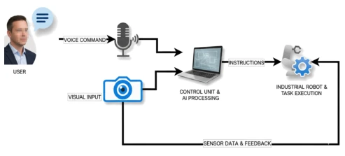

This paper accomplishes something commendable: after the accumulation of model capabilities, someone finally asks users "Did you perceive it?". The authors did not stop at increasing the success rate from 75% to 90% and declare victory, but conducted a user study with 24 participants. Although the sample size is small and the scenario is limited to desktop grasping, it at least demonstrates that technical improvements can indeed be perceived by humans. However, a 90% success rate still implies a 10% failure rate; although users feel it is "reliable," there is still a distance from "complete trust." This shift in perspective from "machine metrics" to "human perception" is more meaningful than simply boosting benchmark rankings, although it exposes reliability anxiety prior to the deployment of current systems in the real world.
HRI systems often fall into "technical self-indulgence," assuming that metric improvements equate to experience optimization [1]–[4]. However, although generative models are powerful, they may still be fragile without physical world grounding [19]. Previous work [20] achieved a 75% success rate, but perception and execution bottlenecks were evident. Subsequent ablation studies [20] raised the success rate to 90%, but the core problem remains unsolved: is this 15 percentage point gain sufficient for users to detect differences during interaction? Existing literature mostly focuses on task-level performance, lacking quantitative verification of user subjective experience [17], [18]. This study aims to fill this gap, verifying whether technical improvements truly translate into perceptible interaction quality, particularly in safety-critical domains.
The core of the system lies in the multimodal fusion pipeline. The data flow begins at the audio frontend, awakened by the Audio Spectrogram Transformer, with Whisper transcribing the speech. The baseline uses LLaMA 3.1 7B to parse instructions and Florence-2 for open-vocabulary detection; the improved version upgrades to Qwen 3.5 9B and Grounding DINO + SAM, significantly enhancing semantic and visual grounding. The motion control layer retains an Interval Type-2 fuzzy logic controller, as it can explicitly model sensing and execution uncertainty. The hardware platform is fixed as the Dobot Magician robotic arm and RealSense camera, ensuring differences stem solely from the software stack. Fig. 1 clearly depicts the information flow from hardware to decision-making. The user study adopts a strict within-subject design, where 24 participants experienced both systems in a random order, completing two grasping tasks for each system. The questionnaire design targets three core constructs: perceived speed, reliability, and overall capability fluency, all using a 7-point Likert scale. Statistically, except for preference questions which use a binomial test, construct scores employ paired t-tests or Wilcoxon tests, and Holm correction is applied to control the family-wise error rate, ensuring robust and reliable conclusions.
Experiments were conducted in a controlled laboratory environment, using printed fruit images as a fixed vocabulary to ensure geometric and appearance consistency. The baseline system reported a 75% success rate in previous work [20], while the improved configuration reached 90% in ablation studies. 24 participants completed 4 interactions (2 per system), with random order to eliminate fatigue effects. Main results: 17 participants (70.83%) preferred the improved system (p=0.043, h=0.43). The scores for all three perception constructs were significantly higher than the baseline; after Holm correction, p<0.001, with effect sizes ranging from large to very large (dz 1.54 to 2.03). Objective metrics and subjective evaluations were highly aligned, confirming that the 15% technical gain crossed the perception threshold. However, the mean reliability score remained close to the midpoint, indicating that even after improvement, the system still experiences occasional failures. Ablation studies confirmed that the perception module has the greatest impact on success rate; user feedback further validated the effectiveness of the visual and language module upgrades, but also revealed that the current system still requires improved robustness prior to real-world deployment.
其他图片Other Figures

Fig. 1. Information flow of the complete system for both pipelines. Hardware elements and data flow of the robotic manipulation pipeline. Figure from [20].